2020.09 — 2024.06本科

厦门大学
XIAMEN UNIVERSITY
计算机科学与技术
COMPUTER SCIENCE01
HELLO, I’M MEW
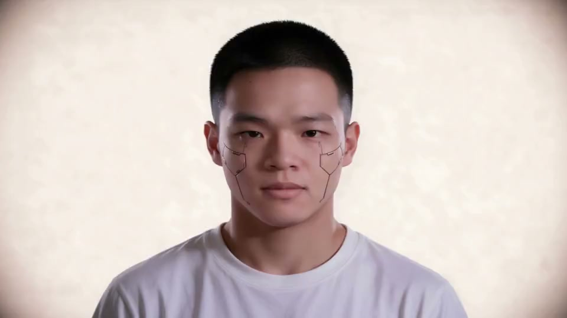
十二月，故事开始。
出生的地方，也是长大的地方。
左右滑动，查看学校经历
XIAMEN UNIVERSITY
计算机科学与技术
UNIVERSITY OF INTERNATIONAL RELATIONS
西方经济学
从行业研究、产品设计，
到企业 AI 应用落地。
飞书 · FDE / 前沿部署工程师
ToB 场景 AI 方案落地与交付
设计部 · 产品设计师
AI 产品评测与交互设计
技术中心 · 行研实习生
智能体开发与行业研究
市场部 · 实习生
境外客户资质审核与风控支持
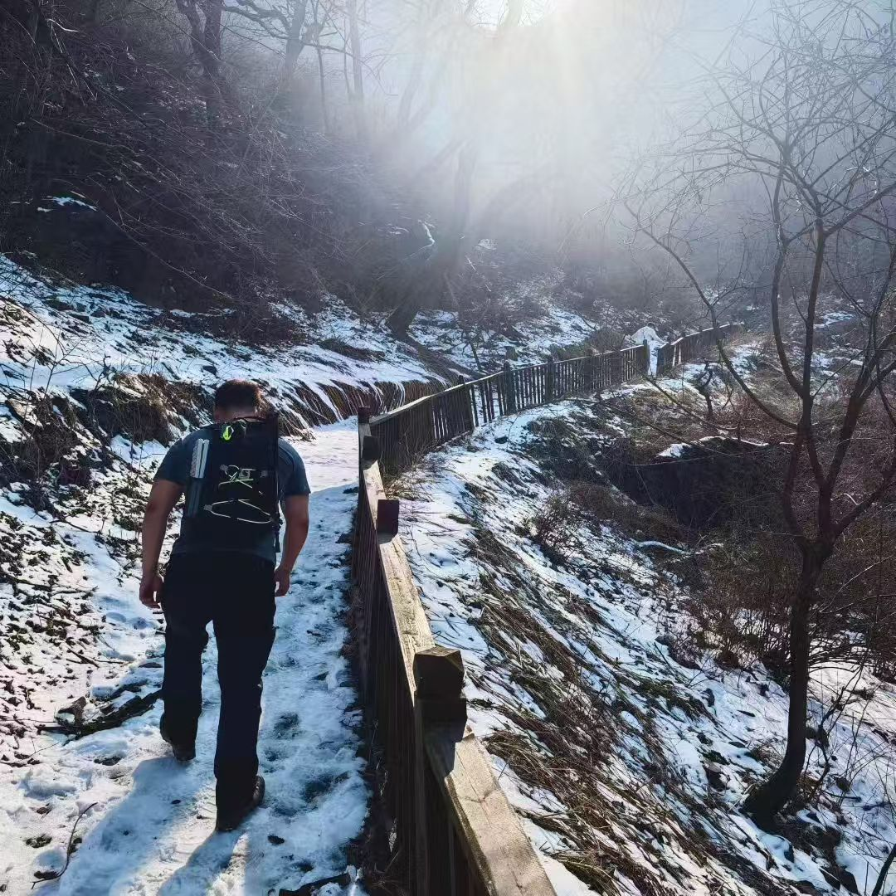
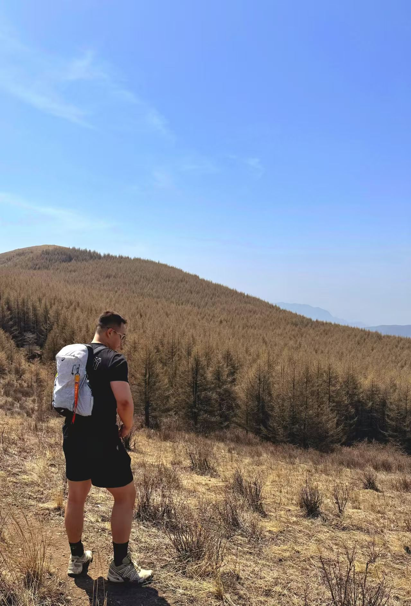
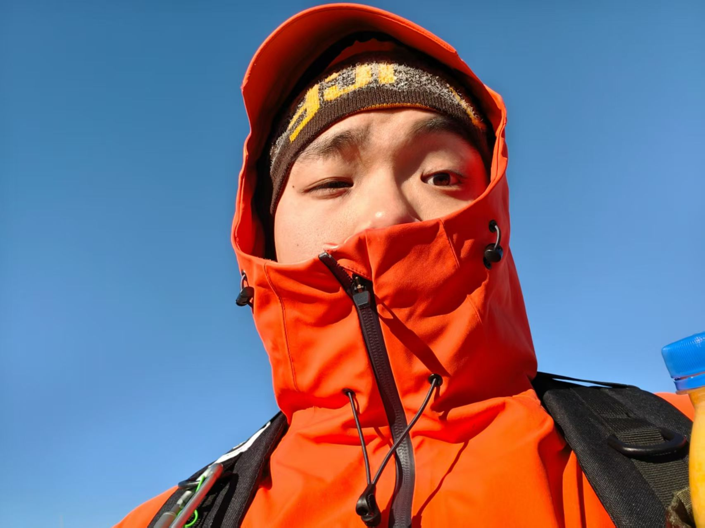
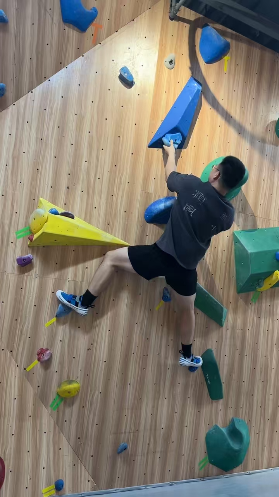
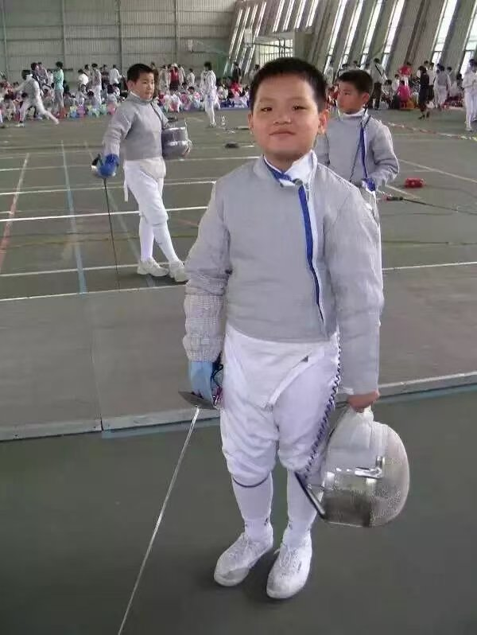
下一组，继续。
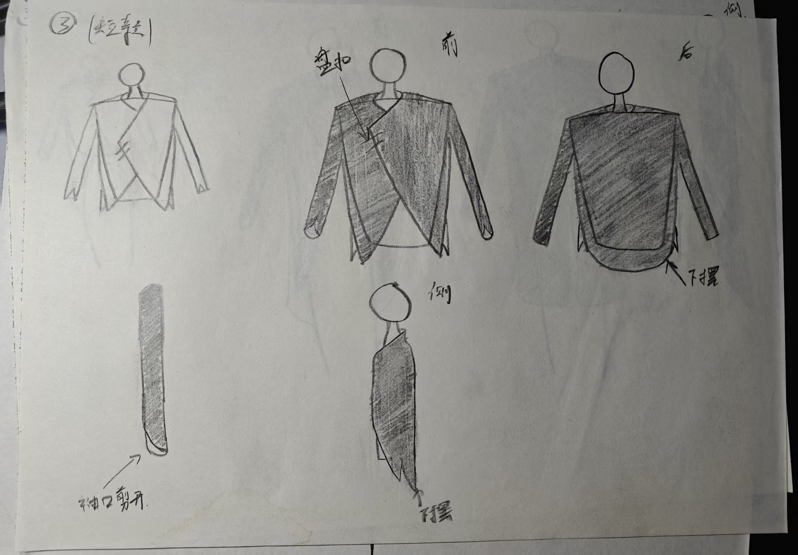
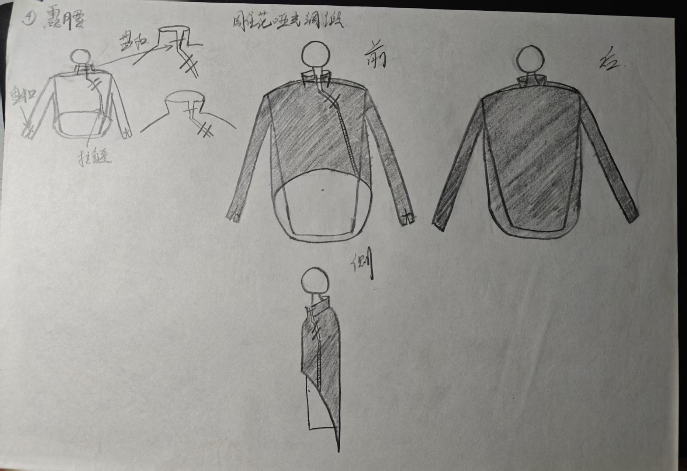
2 张设计手稿
3 段完整视频 · 点击播放
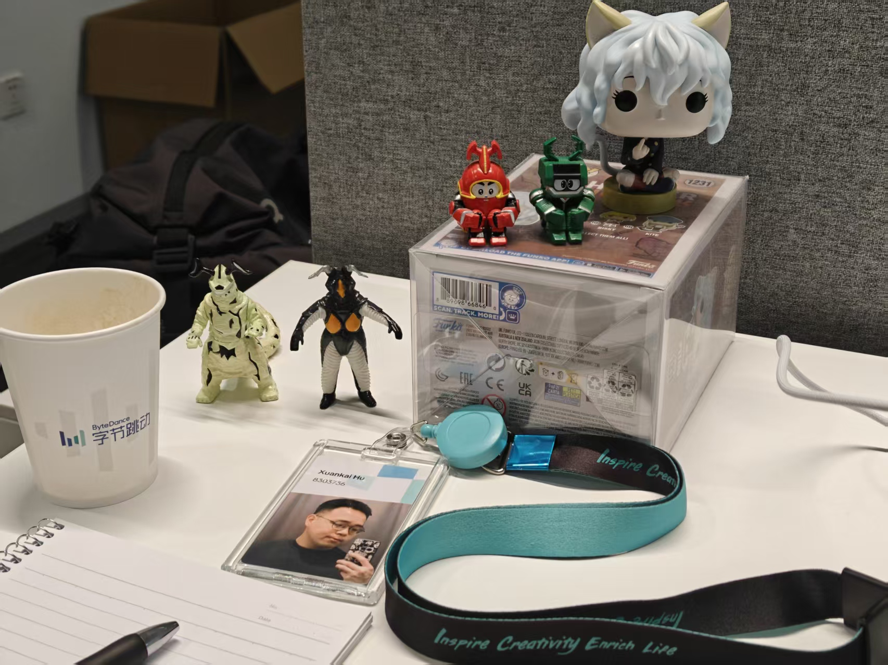
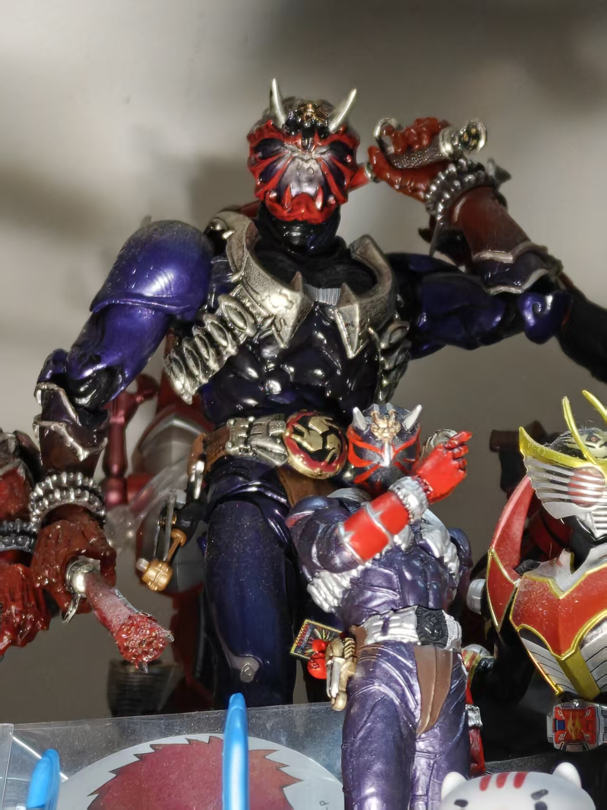
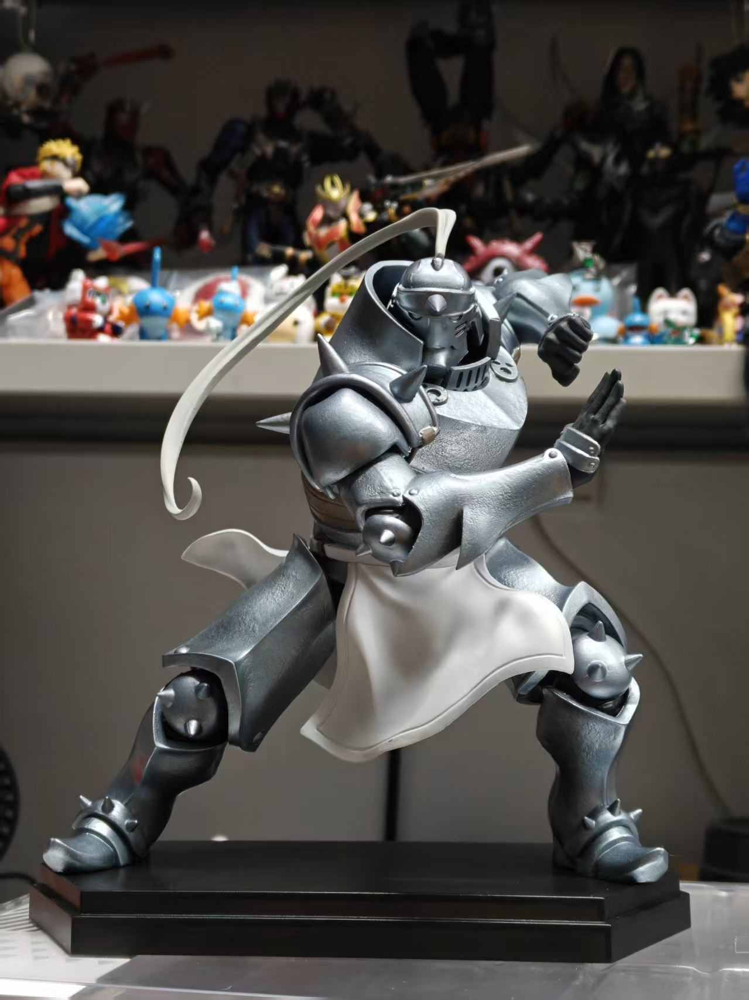
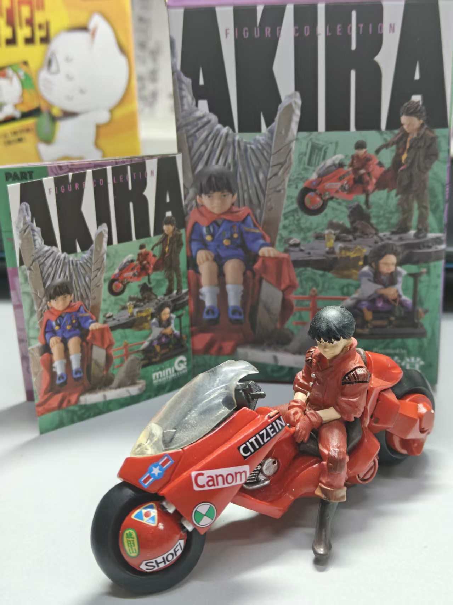
4 张收藏照片